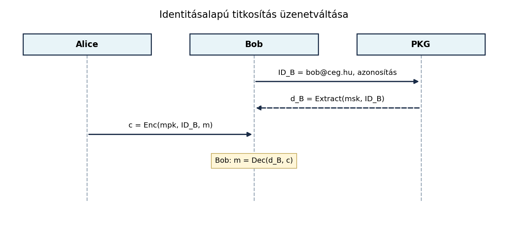

A hagyományos nyilvános kulcsú titkosításban – ahogyan azt az Az RSA felépítése és az ECDH
és X25519 kapcsán láttuk – a küldőnek előbb hiteles nyilvános
kulcsot kell szereznie. Ez általában tanúsítványt,
hitelesítésszolgáltatót és visszavonási infrastruktúrát igényel. Az
identitásalapú titkosítás (identity-based encryption, IBE) ezt a
infrastruktúrát radikálisan leegyszerűsíti: a nyilvános kulcs maga az
identitás, például a bob@ceg.hu e-mail cím. Alice tehát
azonnal tud Bobnak titkosítani, amint ismeri a címét – akkor is, ha Bob
még soha nem regisztrált kulcsot.
Ennek ára van: szükség van egy központi, megbízható harmadik félre, az úgynevezett kulcsgeneráló központra (Private Key Generator, PKG), amely a rendszer mesterkulcsával minden identitáshoz elő tudja állítani a hozzá tartozó titkos kulcsot. Ez a centralizáció egyszerre előny és hátrány, ahogyan azt hamarosan látni fogjuk.
Az IBE működése a nyilvános kulcsú titkosításhoz képest egyetlen fontos csavaron alapul: a titkos kulcsot nem a felhasználó generálja, hanem a PKG osztja ki. Az alábbi diagram egy tipikus üzenetváltást mutat be.

A diagramon látható, hogy Bob egyszer kap egy titkos kulcsot a PKG-től, Alice pedig anélkül titkosít, hogy bármilyen interakciót folytatna Bobbal vagy a PKG-vel. Ez az aszinkron tulajdonság az IBE egyik legfontosabb gyakorlati előnye.
Definíció. Egy identitásalapú titkosítási séma négy valószínűségi algoritmusból áll:
A helyesség követelménye: minden , minden , minden identitás és minden üzenet esetén
Az identitás tetszőleges bitsorozat lehet, de a gyakorlatban általában e-mail cím, telefonszám vagy URI formájú.
Figyelem. Az IBE-nek van egy szembetűnő bizalmi tulajdonsága: a PKG a mesterkulcs birtokában minden identitás titkos kulcsát elő tudja állítani, tehát elvileg minden rejtett szöveget vissza tud fejteni. Ezt hívjuk kulcsletéteményes (key escrow) tulajdonságnak.
A Boneh–Franklin-séma az első praktikusan használható IBE konstrukció, és a bilineáris párosítások klasszikus alkalmazása. Az itt bemutatott változat a szakirodalomban BasicIdent néven ismert; ez csak CPA-biztonságot ad, de jól mutatja a felépítést. A séma szimmetrikus párosítást használ: , ahol prímrendű ciklikus csoport, , és a egy rögzített generátora. A csoport ugyancsak rendű, és .
A négy algoritmus a következő.
Algoritmus (Boneh–Franklin BasicIdent).
Setup.
Válasszunk
egyenletes eloszlással. Legyen a mesterkulcs
,
a nyilvános kulcs pedig
.
Legyen
egy hash-függvény, amely identitásokat csoportelemekre képez, és legyen
egy hash-függvény a
elemeiből az
-bites
üzenettérre. (A gyakorlatban a
egy „hash-and-pray” vagy jobb esetben egy determinisztikus
map-to-point eljárás, ez utóbbi az ellenőrzési igényű részletes
szabványosításhoz tartozik.)
A publikus paraméterek:
Extract.
Az
identitáshoz számítsuk ki
majd a titkos kulcs:
A PKG ezt biztonságos csatornán átadja a felhasználónak.
Encrypt.
Az
üzenet titkosításához az
címzettel:
Válasszunk
egyenletes eloszlással, és számítsuk ki
A rejtett szöveg:
Decrypt.
A
rejtett szövegből a címzett a saját
titkos kulcsával:
A helyesség a párosítás bilinearitásából következik:
Ezért a visszafejtés során ugyanazt a értéket kapjuk, mint amit a titkosítás használt, tehát .
A Boneh–Franklin-séma biztonsága a bilineáris Diffie–Hellman-feltevésen (BDH) alapul. Ez azt mondja ki, hogy adott mellett nehéz kiszámítani az értéket. A bizonyítás véletlen orákulum modellben történik, és a cél a IND-ID-CPA biztonság elérése.
A bizonyítási terv röviden így foglalható össze. Tegyük fel, hogy létezik egy támadó, amely a fenti sémát feltöri. Ekkor konstruálunk egy redukciót, amely a BDH-feladatot oldja meg. A redukció a BDH-példányból úgy állítja be a publikus paramétereket, hogy a mesterkulcsot nem ismeri, de a és véletlen orákulumok válaszait a BDH-példányhoz csatolja. Amikor Extract-lekérdezést küld egy -ra, a értéket ismert -vel programozta, így -t meg tudja adni; a BDH-példány elemét csak a (sejtett) kihívási identitás -ába ágyazza, amelyre Extract-lekérdezés nem érkezhet. A kihívás , és ha nyer, megjelenik a -lekérdezései között. A részletes redukció és az előnyveszteség kiszámítása meghaladja ennek az alfejezetnek a kereteit; a pontos bizonyítás a Boneh–Franklin-cikkben található, és a fogalmi hátteret a A véletlen orákulum modell alfejezet ismerteti.
Fontos következmény: a fenti BasicIdent séma csak CPA-biztonságot ad. Ha a támadó aktívan módosíthatja a rejtett szöveget, a séma nem nyújt integritást és hitelességet. A gyakorlati konstrukciók ezért a Fujisaki–Okamoto-transzformációhoz hasonló módszerrel CCA-biztos változatot készítenek (FullIdent), vagy a séma kimenetét hitelesített titkosítással kombinálják.
A kulcsletéteményes tulajdonság azt jelenti, hogy a PKG a mesterkulccsal minden identitás titkos kulcsát kiszámíthatja. Ezért az IBE nem alkalmas arra, hogy a felhasználó titkait a PKG-vel szemben is megvédje. A PKG nemcsak passzívan megfigyelheti a forgalmat, hanem utólag bármely rejtett szöveget vissza is fejthet, hiszen ismeri az összes -t. Ez alapvetően más bizalmi modell, mint egy hagyományos hitelesítésszolgáltató esetén, ahol a CA kompromittálódása hamis tanúsítványok kiadását teszi lehetővé, de a már meglévő, helyesen ellenőrzött titkos kulcsokkal védett üzeneteket nem feltétlenül fejti vissza.
A probléma enyhítésére több módszer létezik:
A hierarchikus IBE a kulcskiadás terhét és az azonosítást szétosztja (a gyermek-PKG-k delegálnak), de a letétet nem szünteti meg: minden ős ki tudja számolni a leszármazottak kulcsait.
A bizalmi modell tehát nem „megjavítja”, hanem tudatosan kezeli a centralizációt. Vállalati környezetben ez elfogadható lehet, mert a cég jogilag is hozzáférhet az alkalmazottak céges e-mailjeihez; magáncélú, végpontok közötti titkosításnál viszont általában nem kívánatos.
Az IBE természetes alkalmazási területe a vállalati e-mail-titkosítás. Tegyük fel, hogy egy nagyvállalat meg akarja védeni az e-mailjeit a külső lehallgatástól, ugyanakkor a jogi és megfelelőségi osztály igényli, hogy a cég szükség esetén hozzáférjen az alkalmazottak levelezéséhez. Ebben a forgatókönyvben a cég egy belső PKG-t üzemeltet.
Amikor Alice – aki szintén a cégnél dolgozik – titkosítani szeretne
Bobnak, nem kell Bob tanúsítványát keresnie, ellenőriznie, hogy nem
járt-e le, vagy hogy visszavonták-e. Elég annyit tudnia: Bob címe
bob@ceg.hu. Ez a címe a nyilvános kulcsa. Alice akkor is
tud titkosítani, ha Bob éppen nyaral, és soha nem regisztrált kulcsot a
rendszerben. Amikor Bob visszatér, bejelentkezik a vállalati PKG-hez,
azonosítja magát a céges címtár szerint, és megkapja a
bob@ceg.hu-hoz tartozó titkos kulcsot. Ezután az összes
neki érkezett titkos e-mailt vissza tudja fejteni.
A kulcsletét itt előnyként is felfogható: a cég a mesterkulccsal hozzáfér a rejtett e-mailekhez, ami lehetővé teszi a belső auditot, adatvisszaállítást vagy jogi eljárásokhoz szükséges feltárást. Ugyanakkor éppen ezért a mesterkulcs védelme kiemelten fontos. A gyakorlatban a PKG-t hardveres biztonsági modulban (HSM) futtatják, és a mesterkulcsot többszemélyes eljárással kezelik. Konkrét ipari termékeket itt nem állítok ellenőrzöttként; a vállalati e-mail-titkosító megoldások között valóban ismertek ilyen filozófiájú rendszerek, de a pontos terméklista és a megfelelőségi állapot ellenőrzést igényel.
Az identitásalapú titkosítás természetes általánosítása az attribútumalapú titkosítás (attribute-based encryption, ABE). Itt a nyilvános kulcs nem egy konkrét identitás, hanem egy attribútumhalmaz vagy egy hozzáférési feltétel, például: „szervezeti egység = HR és jogosultság = bérszámfejtő” vagy „minősítés = titkos vagy minősítés = bizalmas”. A PKG az egyes felhasználóknak az attribútumaikhoz tartozó titkos kulcsot ad. A küldő ezután egy feltételt megfogalmazva titkosít, és csak azok a felhasználók tudják visszafejteni, akiknek az attribútumai kielégítik a feltételt. Ez rendkívül rugalmas, de a kulcsletéteményes kérdés itt is megjelenik. A részletes tárgyalás meghaladja ezt a fejezetet; a könyv a Továbblépés: kutatás, gyakorlat és pályák a kriptográfiában visszatér a haladó kriptográfiai alkalmazásokra.
A kulcsletét figyelmen kívül hagyása.
A leggyakoribb hiba az, ha a fejlesztő IBE-t használ olyan környezetben,
ahol a PKG-vel szemben is titkosságot kellene elérni. Ilyenkor a
rendszer nem teljesíti a biztonsági célt, mert a PKG mindent visszafejt.
A helyes gyakorlat: a bizalmi modellt dokumentálni, és ha a kulcsletét
nem fogadható el, ne IBE-t válasszunk, vagy használjunk elosztott
PKG-t.
A H_1 hash helytelen
megvalósítása.
Az identitásból csoportelemet készíteni nem egyszerű hash-elés. Egy
közönséges SHA-256 kimenet egy egész szám, nem a
csoport eleme. Szükség van egy úgynevezett map-to-point
eljárásra, amely a hash-outputot egy elliptikus görbe pontjára vagy más
csoportelemre képezi le. Ha ezt rosszul csináljuk, a séma egyáltalán nem
működik, vagy diszkrét logaritmus-szivárgáshoz vezethet.
Az r véletlen újrahasználata.
Ha ugyanazt az
értéket használjuk ugyanarra az identitásra és két különböző üzenetre,
akkor a
reláció miatt a támadó megtudja a két nyílt szöveg XOR-ját. Ez ugyanaz a
végzetes nonce-újrahasználat, mint a folyamrejtjeleknél.
Az IBE-t aláíró sémaként használni.
Az Extract által kiadott
titkosítási kulcs, nem aláíró kulcs. A digitális aláíráshoz más
konstrukció, például a BLS-aláírás és
aggregálás vagy az ECDSA való.
1. feladat (A). Sorolja fel a Boneh–Franklin IBE négy algoritmusát, és adja meg mindegyik bemenetét és kimenetét.
2. feladat (A). Legyen egy -rendű csoport, a generátora, , , és tegyük fel, hogy . Számítsa ki , , , , és a értékét (a párosítási értékeket az hatványaiként adja meg).
3. feladat (B). Tegyük fel, hogy Alice két üzenetet, -et és -t, ugyanarra az identitásra titkosítja, és véletlenül mindkét esetben ugyanazt az értéket használja. A támadó elfogja a két rejtett szöveget: és . Mit tud a támadó kiszámítani -ből és -ből? Indokolja a választ.
4. feladat (B). Hasonlítsa össze a PKG kompromittálódását egy hagyományos hitelesítésszolgáltató (CA) kompromittálódásával. Melyik esetben férhet hozzá a támadó a korábban elfogott, titkosított üzenetekhez? Részletezze.
5. feladat (C). Bizonyítsa be formálisan a Boneh–Franklin-séma helyességét: mutassa meg, hogy a algoritmus a kimenetéből valóban az eredeti -et állítja elő. Nevezze meg a felhasznált párosítási tulajdonságot.
6. feladat (D). Tervezzen hibrid IBE sémát. Az IBE-t ne közvetlenül az üzenet titkosítására használja, hanem KEM-ként: a küldő generál egy véletlen szimmetrikus kulcsot, azt IBE-vel beágyazza, az üzenetet pedig egy AEAD-rejtjellel (pl. AES-GCM) titkosítja a szimmetrikus kulccsal. Adja meg az új algoritmusokat a Boneh–Franklin-sémára építve.
1. feladat.
Setup: input
,
output
.
Extract: input
,
output
.
Encrypt: input
,
output
.
Decrypt: input
,
output
vagy
.
2. feladat.
.
.
.
.
.
.
3. feladat.
Mivel
azonos, az
is azonos, tehát
is azonos. Ezért
,
.
A támadó kiszámítja:
.
Ez a nyílt szövegek XOR-ja, ami gyakran elegendő a tartalom részleges
rekonstruálásához. Ezért az
értéket minden titkosításhoz frissen kell választani.
4. feladat.
Ha a PKG kompromittálódik, a támadó a mesterkulccsal minden identitás
titkos kulcsát előállíthatja, ezért minden korábban elfogott
rejtett szöveget visszafejthet, amennyiben az IBE-t közvetlenül
használták. Ezzel szemben egy hagyományos CA kompromittálódása
elsősorban hamis tanúsítványok kiadását teszi lehetővé, de a már
létrehozott és helyesen ellenőrzött nyilvános kulcsokkal titkosított
üzeneteket nem feltétlenül fedi fel. A CA-kompromittálódás így
elsősorban a jövőbeni hitelesítést veszélyezteti, a PKG-kompromittálódás
viszont a múltbeli bizalmasságot is. Elosztott PKG-vel ez a kockázat
csökkenthető.
5. feladat.
Legyen
a titkosítás eredménye, ahol
,
és
.
A visszafejtés a
titkos kulccsal:
.
A bilineáris tulajdonság szerint
.
Ugyanakkor
,
így
.
Tehát
.
A visszafejtés ezért:
.
A felhasznált tulajdonság a párosítás bilinearitása:
.
6. feladat (hibrid IBE).
Legyen
egy hitelesített titkosítás.
A
eljárás:
1. válasszunk véletlen
szimmetrikus kulcsot;
2. titkosítsuk az üzenetet:
;
3. az IBE-vel csak a kulcsot rejtjük:
;
4. a kimenet
.
A
eljárás:
1. bontsuk fel
-t
-re;
2. fejtsük vissza a szimmetrikus kulcsot:
;
3. adjuk vissza
-et.
Ez a szerkezet tetszőleges hosszú üzenetet kezel. CCA-biztonságot akkor ad, ha az IBE-KEM IND-ID-CCA-biztos (pl. a FullIdent vagy egy Fujisaki–Okamoto-transzformált BasicIdent) és az AEAD hitelesített titkosítás; BasicIdent-tel csak CPA-biztonság érhető el. A küldőt egyik esetben sem hitelesíti – ehhez aláírás kell. A teljes bizonyítás a KEM/DEM hibrid érvelésre épül, hasonlóan a ElGamal-titkosítás, hibrid titkosítás és a KEM/DEM szerkezet alfejezethez.
Az identitásalapú titkosítás (IBE) a nyilvános kulcsú titkosítás egy változata, ahol a nyilvános kulcs maga az identitás, például e-mail cím. A rendszer négy algoritmusból áll: Setup, Extract, Encrypt, Decrypt. A Boneh–Franklin-séma bilineáris párosítást használ: a PKG mesterkulccsal a titkos kulcsot adja, a titkosítás alakú, a visszafejtés a párosítás bilinearitása miatt ugyanazt a értéket adja. A séma CPA-biztonsága a BDH-feltevésen és a véletlen orákulum modellen alapul. A PKG kulcsletéteményes hatalma miatt a rendszer minden rejtett szöveget visszafejthet; ez vállalati e-mail-titkosításban előny is lehet, de magáncélú titkosításnál nem kívánatos. A kulcsletét enyhítésére elosztott PKG vagy tanúsítványmentes titkosítás használható; a hierarchikus IBE a terhet osztja szét, de a letétet nem szünteti meg. Az attribútumalapú titkosítás az IBE általánosítása attribútum-alapú hozzáféréssel. Továbbvitt eredmény: az IBE fogalma és a kulcsletéteményes bizalmi modell a Továbblépés: kutatás, gyakorlat és pályák a kriptográfiában ismét előkerül a haladó kriptográfiai alkalmazások kontextusában.
A Boneh–Franklin-séma leírása a klasszikus szakirodalmon alapul: Boneh és Franklin, „Identity-Based Encryption from the Weil Pairing”. A pontos bizonyítás és a Fujisaki–Okamoto-transzformáció részletei meghaladják ezt az alfejezetet; az évszámot, a folyóiratbeli pontos adatokat és a szabványosított görbe- és hash-paramétereket nem állítom ellenőrzöttként. A gyakorlati vállalati IBE-termékek létére vonatkozó állítás általános, konkrét terméknevet és megfelelőségi státuszt nem adok. A map-to-point eljárások és a paraméterválasztás az aktuális IETF/CFRG dokumentumokban keresendők.